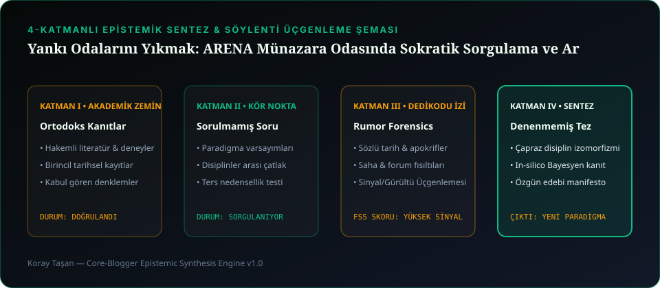

Yankı Odalarını Yıkmak: ARENA Münazara Odasında Sokratik Sorgulama ve Argüman Ağırlıklandırma Matematiği
Sosyal medyada en çok bağıranın haklı çıktığı çağda, kanıt kalitesini ve mantıksal tutarlılığı puanlayan entelektüel düello mimarisi.
4 Katmanlı Epistemik Araştırma Çekirdeği
1. Gürültü Çağında 'Intellectual Salon' Fikri
Modern sosyal ağlar insanları kendi inançlarının yankı odalarına hapseder. ARENA (Intellectual Salon & Debate Chamber), bir konunun yalnızca 'evet/hayır' kutuplarıyla değil; tez, antitez, kanıt ağırlığı ve çürütme (rebuttal) katmanlarıyla tartışıldığı yapılandırılmış bir düşünce alanıdır.
2. Toulmin Modeli ve Safsata (Fallacy) Kalkanı
ARENA'da bir iddianın ağırlık kazanabilmesi için salt retorik yetmez; iddianın (Claim) hangi veriye (Data) dayandığı ve hangi mantıksal köprüyle (Warrant) bağlandığı ayrıştırılır. Korkuluk (Strawman) veya Kişiye Saldırı (Ad Hominem) gibi safsatalar yapısal olarak işaretlenir.
3. Steelmanning: Rakibin Tezini En Güçlü Hâliyle Kurmak
ARENA kültürünün altın kuralı 'Steelmanning' ilkesidir: Bir fikri eleştirmeden önce, o fikri savunan kişinin bile onaylayacağı en güçlü ve en adil biçimiyle özetlemek zorundasınızdır.
